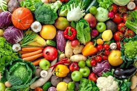

Bem vindo ao nosso site de Nutrição
Uma alimentação equilibrada ajuda a manter a saúde, previne doenças e melhora a qualidade de vida
Principais Dicas
- Consuma frutas e vegetais diariamente
- Beba muita água
- Mantenha um equilíbrio entre proteínas, carboidratos e gorduras